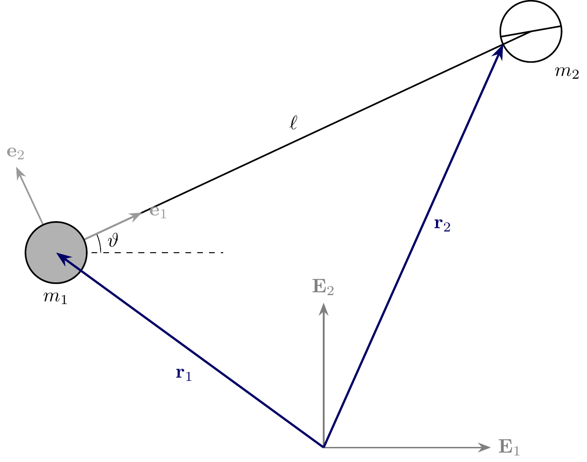
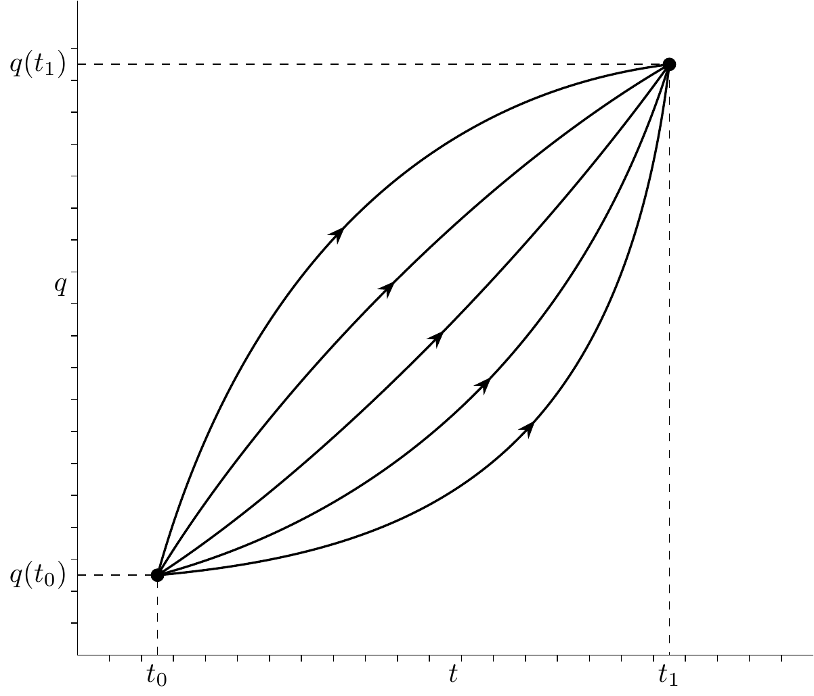
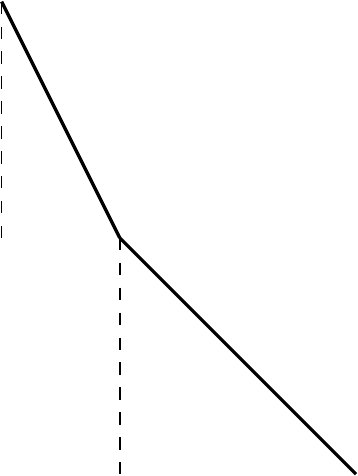

23 Lagrange’s Equations of Motion for a System of Particles
23.1 Constraints
Put in simple terms, a holonomic constraint is a constraint which can be written in terms of position coordinates, e.g. \(x=0\). A nonholonomic constraint is one which cannot be written in terms of position coordinates, e.g. \({\bf v}\cdot{\bf e}_\theta = 0\).
TipThink!
Question: Consider a particle constrained to move on a horizontal surface \(z=0\). Is this constraint holonomic?
NoteAnswer
…
TipThink!
Question: Consider two particles connected by a rigid massless rod of length \(\ell\). What constraint is this system of two particles subject to? Is this constraint holonomic or nonholonomic?
NoteAnswer
…
TipThink!
Question: Consider the system in the previous question where \(m_2\) is subject to a knife-edge constraint \({\bf v}_2\cdot{\bf e}_2=0\). Is this constraint holonomic or nonholonomic.
NoteAnswer
…
Frobenius’ integrability criteria may be used to determine definitely if a constraint or a system of constraints is holonomic or not. The criterion is beyond the scope of the class. Here, we restrict our attention to holonomic constraints.
23.2 Lagrange’s Prescription on Constraints
Consider a constraint of the form \[\begin{align*} {\bf f}_1\cdot{\bf v}_1+\hdots+{\bf f}_N\cdot{\bf v}_N + e = 0, \end{align*}\] then the associated Lagrange prescription of the constraint force is \(\mu{\bf f}_K\) applied at particle \(K\), \(K=1,\hdots,n\).
TipThink!
Question: Prescribe the constraint force for a particle constrained on a plane \(z = 0\).
NoteAnswer
This constraint may be written as \({\bf v}\cdot{\bf E}_z = 0\) and the constraint force acting on the particle is \({\bf F} = \mu{\bf E}_z.\)
TipThink!
Question: Prescribe the constraint force acting on a simple pendulum associated with the constraint that the length of the pendulum is constant.
NoteAnswer
A simple pendulum has the constraint \({\bf r} = 0\) which may be written as \({\bf v}\cdot{\bf e}_r = 0\), then the constraint force acting on the particle is \({\bf F} = \mu{\bf e}_r\).
23.3 Unconstrained Equations
Consider a system of \(n\) particles with \(3n\) coordinates. The system is subject to \(m\) holonomic constraints, so the number of degrees of freedom of the system is \(3n-m\). The generalized coordinates of the system may be listed as \[\begin{align} q = \begin{bmatrix} x^1 & y^1 & z^1 & \cdots & x^n & y^n & z^n \end{bmatrix}^T \end{align}\] and the corresponding generalized velocities are \[\begin{align} u = \begin{bmatrix} v^{x1} & v^{y1} & v^{z1} & \cdots & v^{xn} & v^{yn} & v^{zn} \end{bmatrix}^T \end{align}\] We define \(u\) so that later we set \(u = \dot{q}\).
We arrange the generalized coordinates such that the first \(3n-m\) coordinates are the unconstrained degrees of freedom and the last \(m\) coordinates are equal to the holonomic constraints, and can be later set to zero.
TipThink!
Question: Generalized coordinates for simple harmonic oscillator.
NoteAnswer
\(q = [x\ y\ z]\), \(u = [v_x\ v_y\ v_z]\).
TipThink!
Question: Generalized coordinates for simple pendulum.
NoteAnswer
\(q = [\theta\ \beta\ z]\), \(u = [u_\theta\ u_\beta\ u_z]\) where \(\beta = r-\ell\).
The kinetic energy of the system is \(T\), then Lagrange’s equations of motion of the system are \[\begin{align} \frac{d}{dt}\lp\frac{\partial T}{\partial u^i}\rp-\frac{\partial T}{\partial q^i} = \sum_{K=1}^n{\bf F}^K\cdot \frac{\partial {\bf r}^K}{\partial q^i} \end{align}\] Equivalently, using the Lagrangian \(L = T-U\), where \(U\) is the potential energy, the equations of motion of the system may be written as \[\begin{align} \frac{d}{dt}\lp\frac{\partial L}{\partial u^i}\rp-\frac{\partial L}{\partial q^i} = \sum_{K=1}^n{\bf F}_{nonc}^K\cdot \frac{\partial {\bf r}^K}{\partial q^i} \end{align}\] where \({\bf F}^K\) is the sum of external forces acting on particle \(K\) while \({\bf F}_{nonc}^K\) is the sum of nonconservative forces acting on \(K\).
23.3.1 Advantage of Lagrange’s Equations
If the system is subject to \(m\) holonomic constraints, if you choose the last \(m\) generalized coordinates to be equal to the constraints, then the first \(m-n\) Lagrange’s equations of motion will be uncoupled from the holonomic constraint forces, these are the equations of motion. The last \(n-m\) equations can be solved for the holonomic constraint forces. If one does not wish to solve for these forces, one can just use the constrained kinetic energy.
23.4 Constrained Equations
Consider a system of \(n\) particles with \(3n\) degrees of freedom and \(m\) holonomic constraints prescribed using Lagrange’s equations of motion. The unconstrained degrees of freedom of the system are arranged in an array of generalized coordinates \(q\) and generalized velocities \(u\), and the constrained kinetic energy of the system is \(\tilde{T}\), then Lagrange’s equations of motion of the system are \[\begin{align} \frac{d}{dt}\lp\frac{\partial \tilde{T}}{\partial u^i}\rp-\frac{\partial \tilde{T}}{\partial q^i} = {\bf F}\cdot{\bf a}_i. \end{align}\] Equivalently, using the constrained Lagrangian \(\tilde{L} = \tilde{T}-\tilde{U}\), where \(\tilde{U}\) is the constrained potential energy, the equations of motion of the system may be written as \[\begin{align} \frac{d}{dt}\lp\frac{\partial \tilde{L}}{\partial u^i}\rp-\frac{\partial \tilde{L}}{\partial q^i} = {\bf F}_{nconc}\cdot{\bf a}_i. \end{align}\] If the forces are prescribed with Lagrange’s prescription, then \({\bf F}\cdot{\bf a}_i\) and \({\bf F}_{nconc}\cdot{\bf a}_i\) reduce to \({\bf F}_{applied}\cdot{\bf a}_i\) and \({\bf F}_{applied, nconc}\cdot{\bf a}_i\) respectively, that is the applied forces and the nonconservative applied forces.
In many cases, the nonconservative applied forces are zero, hence the commonly known homogeneous form of Lagrange’s equation \[\begin{align} \frac{d}{dt}\lp\frac{\partial \tilde{L}}{\partial u^i}\rp-\frac{\partial \tilde{L}}{\partial q^i} = 0. \end{align}\]
23.5 Example: Simple Harmonic Oscillator
Consider a simple harmonic oscillator of mass \(m\) connected to a linear spring of unstretched length \(\ell_0\) and stiffness \(k\). The origin is taken at the location of \(m\) when the spring is unstretched so that the position vector of \(m\) is \({\bf r} = x{\bf E}_x\) and \(x\) denotes the stretch of the spring. The velocity of \(m\) is \({\bf v} = v{\bf E}_x\). Find the equation of motion of the mass \(m\).
Using unconstrained Lagrangian: \[\begin{align} \begin{split} & q^1 = x,\qquad q^2 = y, \qquad q^3 = z,\\ & u^1 = v_x,\qquad u^2 = v_y, \qquad u^3 = v_z,\\ \end{split} \end{align}\] Lagrangian \[\begin{align} L = T-U = \frac{m}{2}\lp v_x^2+v_y^2+v_z^2\rp-mgz \end{align}\] Constraint forces \(\mu_1{\bf E}_y\), \(\mu_2{\bf E}_z\).
Equation along \(z\), \[\begin{align} \begin{split} \dot{\bf v}_z+mg = \mu_2. \end{split} \end{align}\]
Using constrained Lagrangian:
The kinetic energy of the spring is \(\tilde{T} = \frac{1}{2}v^2\) and potential energy is \(\tilde{U} = \frac{1}{2}kx^2\), thus the Lagrangian is \(\tilde{L} = \frac{1}{2}v^2-\frac{1}{2}kx^2\). Here, \(m\) has one degree of freedom, so \(q = [x]\) and \(u = [v]\), so the equation of motion of the system is obtained …
23.6 Example: Simple Pendulum
\[\begin{align} \begin{split} {\bf r} &= \ell{\bf e}_x,\\ {\bf v} &= \ell\dot{\theta}{\bf e}_y \end{split} \end{align}\] Gravitational potential energy
23.7 Example: Double Pendulum
\[\begin{align} \begin{split} {\bf r}_1 &= \ell_1\,{}_{1}{\bf e}_x,\\ {\bf v}_1 &= \ell_1\dot{\theta}_1\,{}_{1}{\bf e}_y,\\ {\bf r}_2 &= {\bf r}_1+\ell_2\,{}_{2}{\bf e}_x,\\ {\bf v}_2 &= {\bf v}_1+\ell_2\dot{\theta}_2\,{}_{2}{\bf e}_y \end{split} \end{align}\] Gravitational potential energy
23.8 Alternative Principles of Dynamics
Source: O’Reilly’s textbook on Intermediate Dynamics, second edition, Section 4.12
- Jean Bernoulli’s principle of virtual work (1717) - for statics
- D’Alembert’s principle (1743) - extension of the principle of virtual work for dynamics
- Gauss’ principle of least constraint (1829)
- Hamilton’s principle (1835)
23.8.1 Principle of Virtual Work and D’Alembert’s Principle
Consider the principle of virtual work and D’Alembert’s Principle applied to a system of particles. We assume that the particles are subject to a single constraint: \[\begin{align*} {\bf f}_1\cdot{\bf v}_1+\hdots+{\bf f}_N\cdot{\bf v}_N + e = 0. \end{align*}\] The principle of virtual work and D’Alembert’s principle collectively state that the motion of the system of particles is such that the following equation is satisfied: \[\begin{align} \begin{split} \lp {\bf F}_{a1}-m_1\ddot{\bf r}_1\rp\cdot{\bf d}_1+\hdots+\lp {\bf F}_{aN}-m_N\ddot{\bf r}_N\rp\cdot{\bf d}_N = 0, \end{split} \end{align}\] for all possible choices of the vectors \({\bf d}_1, \hdots, {\bf d}_N\) that satisfy the condition \[\begin{align} \begin{split} {\bf f}_1\cdot{\bf d}_1+\hdots+{\bf f}_N\cdot{\bf d}_N = 0. \end{split} \end{align}\] The vectors \({\bf d}_K\) are known as the virtual displacements and are usually denoted by \(\delta {\bf r}_K\). The virtual work performed by the applied force \({\bf F}_{ak}\) is defined as \({\bf F}_{ak}\cdot{\bf d}_K\); thus the equation above states that the combined virtual work of the applied forces \({\bf F}_{aK}\) and the inertial forces \(-m_K\ddot{\bf r}_K\) is zero.
How to obtain the equations of motion of the system of particles from the equation above?
Introduce a Lagrange multiplier, which we denote by the scalar function \(\mu = \mu(t)\), to accommodate the single constraint on the vectors \({\bf d}_K\): \[\begin{align} \begin{split} \sum_{K=1}^N\lp{\bf F}_{aK}-m\ddot{\bf r}_N\rp\cdot{\bf d}_K+\mu\sum_{K=1}^N{\bf f}_K\cdot{\bf d}_K = 0. \end{split} \end{align}\] As a consequence of the Lagrange multiplier \(\mu\), the vectors \({\bf d}_K\) can be varied independently. For the previous equation to hold for all such displacements, it is necessary and sufficient that \[\begin{align} \begin{split} m_K\ddot{\bf r}_K = {\bf F}_{aK}+\mu{\bf f}_K \qquad (K=1,\hdots,N). \end{split} \end{align}\] These equations are none other than the balances of linear momenta for a system of particles subject to the above constraint, for which the constraint forces are prescribed by use of Lagrange’s prescription: \[\begin{align} \begin{split} {\bf F}_{cK} = \mu{\bf f}_K\qquad (K=1,\dots,N). \end{split} \end{align}\]
23.8.2 Gauss’ Principle of Least Action
Suppose we have a system of \(N\) particles that are subject to the constraint \[\begin{align*} {\bf f}_1\cdot{\bf v}_1+\hdots+{\bf f}_N\cdot{\bf v}_N + e = 0. \end{align*}\] and suppose that the constraint forces are prescribed by using Lagrange’s prescription \({\bf F}_{cK} = \mu{\bf f}_K\), \((K=1,\hdots,N)\). Then, in any motion of the system that satisfies the constraint, the constraint forces \({\bf F}_{cK} = \mu{\bf f}_K\) are the least needed to ensure that the constraint is satisfied. That is, Lagrange’s prescription is in a sense optimal!
23.8.3 Hamilton’s Principle
For ease of exposition, we restrict our discussion to a single particle of mass \(m\) and suppose that the coordinates \(q = (q^1,q^2,q^2)\) are used to parametrize the position vector. Hamilton’s principle states that the motion of the system between a given initial configuration \(q(t_0)\) and a given final configuration \(q(t_1)\) is such that it extremizes the integral: \[\begin{align} \begin{split} I = \int_{t_0}^{t_1}Ldt \end{split} \end{align}\] where the Lagrangian \(L = T(q^i,u^i)-U(q^i)\) and \(t_0\) and \(t_1\) are fixed instances of time.
There are an infinite number of paths \(q(t)\) that can connect two possible configurations, and so finding one that extremizes \(I\) appears to be a daunting task.
The necessary conditions for the components of \(q(t)\) to extremize \(I\) are that \(q(t)\) satisfy the following differential equations: \[\begin{align} \frac{d}{dt}\lp\frac{\partial L}{\partial u^i}\rp-\frac{\partial L}{\partial q^i} = 0\qquad (k = 1,2,3). \end{align}\] In the context of extremizing \(I\) (calculus of variations), these are known as the Euler-Lagrange equations.

23.9 Exercises
Double pendulum
